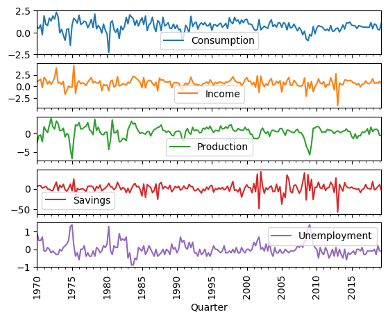
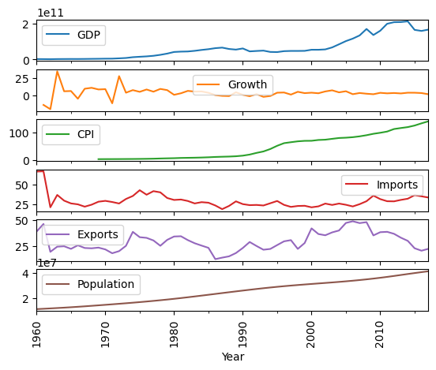
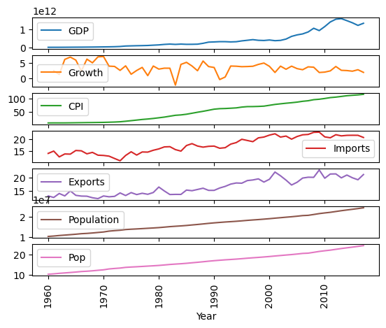
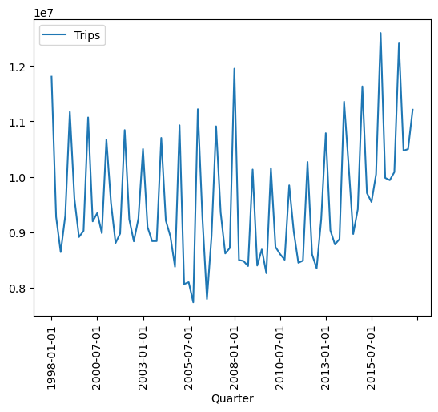
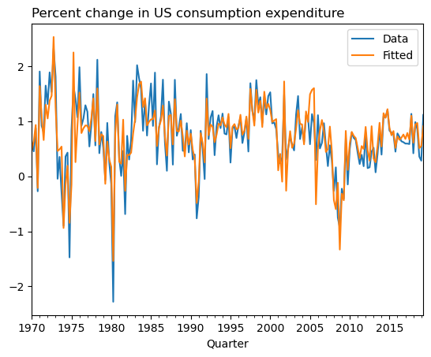
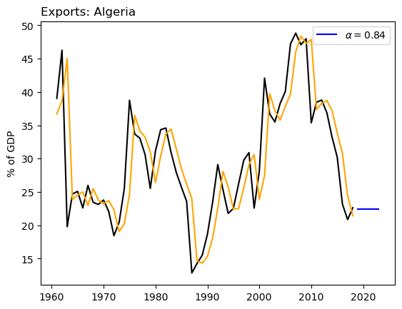
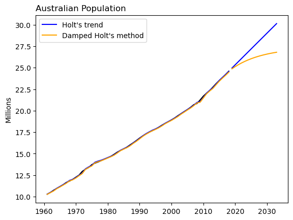
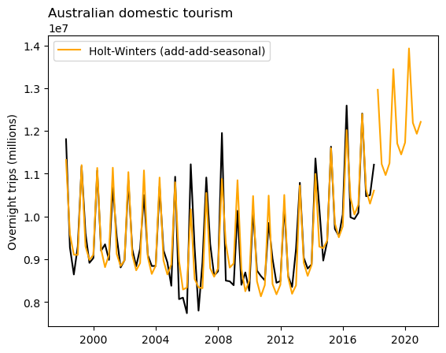
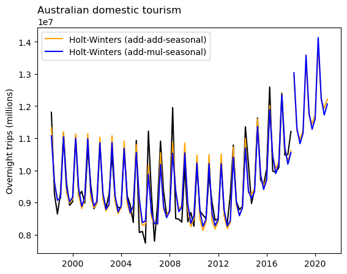

import pandas as pd
import matplotlib.pyplot as plt
import numpy as np
import statsmodels.api as sm
from statsmodels.tsa.api import ExponentialSmoothing, SimpleExpSmoothing, HoltProblem Set 04

Instructions: 1. Name: Tint Tha Ra Wun 1. Create a new ChatGPT chat called “SDS390 PS04” that contains all the prompts you used for this problem set. After you’ve completed your assignment, click the share button and paste the URL in Markdown format here.
Overview of this PS: You will be recreating graphs and explicitly computing values from “FPP 7 and 8 - The forecaster’s toolbox” in python.
Load and explore data
US Consumption
Load and wrangle the us_consumption data set, explore the raw values, and plot the time series in an informative fashion.
#load dataset
us_consumption = pd.read_csv("us_consumption.csv", parse_dates = ['Quarter'], index_col ='Quarter')
#view dataset
print(us_consumption.info())
print(us_consumption.head())
#plot timeseries
us_consumption.plot(subplots = True)
plt.xticks(rotation=90)
plt.show()<class 'pandas.core.frame.DataFrame'>
DatetimeIndex: 198 entries, 1970-01-01 to 2019-04-01
Data columns (total 5 columns):
# Column Non-Null Count Dtype
--- ------ -------------- -----
0 Consumption 198 non-null float64
1 Income 198 non-null float64
2 Production 198 non-null float64
3 Savings 198 non-null float64
4 Unemployment 198 non-null float64
dtypes: float64(5)
memory usage: 9.3 KB
None
Consumption Income Production Savings Unemployment
Quarter
1970-01-01 0.618566 1.044801 -2.452486 5.299014 0.9
1970-04-01 0.451984 1.225647 -0.551459 7.789894 0.5
1970-07-01 0.872872 1.585154 -0.358652 7.403984 0.5
1970-10-01 -0.271848 -0.239545 -2.185691 1.169898 0.7
1971-01-01 1.901345 1.975925 1.909764 3.535667 -0.1
Algeria Exports
Load and wrangle the Algeria economy data set, explore the raw values, and plot the time series in an informative fashion.
#load dataset
algeria_economy = pd.read_csv("algeria_economy.csv", parse_dates = ['Year'], index_col ='Year')
#view dataset
print(algeria_economy.info())
print(algeria_economy.head())
#plot timeseries
algeria_economy.plot(subplots = True)
plt.xticks(rotation=90)
plt.show()<class 'pandas.core.frame.DataFrame'>
DatetimeIndex: 58 entries, 1960-01-01 to 2017-01-01
Data columns (total 8 columns):
# Column Non-Null Count Dtype
--- ------ -------------- -----
0 Country 58 non-null object
1 Code 58 non-null object
2 GDP 58 non-null float64
3 Growth 57 non-null float64
4 CPI 49 non-null float64
5 Imports 58 non-null float64
6 Exports 58 non-null float64
7 Population 58 non-null int64
dtypes: float64(5), int64(1), object(2)
memory usage: 4.1+ KB
None
Country Code GDP Growth CPI Imports Exports \
Year
1960-01-01 Algeria DZA 2.723649e+09 NaN NaN 67.143632 39.043173
1961-01-01 Algeria DZA 2.434777e+09 -13.605441 NaN 67.503771 46.244557
1962-01-01 Algeria DZA 2.001469e+09 -19.685042 NaN 20.818647 19.793873
1963-01-01 Algeria DZA 2.703015e+09 34.313729 NaN 36.825515 24.684682
1964-01-01 Algeria DZA 2.909352e+09 5.839413 NaN 29.439763 25.084059
Population
Year
1960-01-01 11124888
1961-01-01 11404859
1962-01-01 11690153
1963-01-01 11985136
1964-01-01 12295970 
Australia Population
Load and wrangle the Australia economy data set, explore the raw values, and plot the time series in an informative fashion.
#load dataset
aus_economy = pd.read_csv("aus_economy.csv", index_col = 'Year')
#view dataset
print(aus_economy.info())
print(aus_economy.head())
#plot timeseries
aus_economy.plot(subplots = True)
plt.xticks(rotation=90)
plt.show()<class 'pandas.core.frame.DataFrame'>
Int64Index: 58 entries, 1960 to 2017
Data columns (total 9 columns):
# Column Non-Null Count Dtype
--- ------ -------------- -----
0 Country 58 non-null object
1 Code 58 non-null object
2 GDP 58 non-null float64
3 Growth 57 non-null float64
4 CPI 58 non-null float64
5 Imports 58 non-null float64
6 Exports 58 non-null float64
7 Population 58 non-null int64
8 Pop 58 non-null float64
dtypes: float64(6), int64(1), object(2)
memory usage: 4.5+ KB
None
Country Code GDP Growth CPI Imports Exports \
Year
1960 Australia AUS 1.857319e+10 NaN 7.960458 14.061746 12.994452
1961 Australia AUS 1.964834e+10 2.485605 8.142560 15.025080 12.403101
1962 Australia AUS 1.988801e+10 1.296478 8.116545 12.630927 13.943012
1963 Australia AUS 2.150185e+10 6.214278 8.168574 13.834054 13.005886
1964 Australia AUS 2.375854e+10 6.978724 8.402706 13.764495 14.938248
Population Pop
Year
1960 10276477 10.276477
1961 10483000 10.483000
1962 10742000 10.742000
1963 10950000 10.950000
1964 11167000 11.167000 
Australia Tourism
Load and wrangle the Australia Holidays data set, explore the raw values, and plot the time series in an informative fashion.
#load dataset
aus_holidays = pd.read_csv("aus_holidays.csv", index_col='Quarter')
#view dataset
print(aus_holidays.info())
print(aus_holidays)
#plot timeseries
aus_holidays.plot(subplots = True)
plt.xticks(rotation=90)
plt.show()<class 'pandas.core.frame.DataFrame'>
Index: 80 entries, 1998-01-01 to 2017-10-01
Data columns (total 1 columns):
# Column Non-Null Count Dtype
--- ------ -------------- -----
0 Trips 80 non-null float64
dtypes: float64(1)
memory usage: 1.2+ KB
None
Trips
Quarter
1998-01-01 1.180604e+07
1998-04-01 9.275662e+06
1998-07-01 8.642489e+06
1998-10-01 9.299524e+06
1999-01-01 1.117203e+07
... ...
2016-10-01 1.008496e+07
2017-01-01 1.240642e+07
2017-04-01 1.047120e+07
2017-07-01 1.049917e+07
2017-10-01 1.121082e+07
[80 rows x 1 columns]
Time Series Regression Model
- FPP 7.2 - Simple exponential smoothing: Recreate Fig 7.6
dependent_variable = us_consumption['Consumption']
independent_variables = us_consumption[['Income', 'Production', 'Savings', 'Unemployment']]
# Add a constant term to the independent variables
independent_variables = sm.add_constant(independent_variables)
# Fit the OLS model
model = sm.OLS(dependent_variable, independent_variables).fit()
#Print model summary
print(model.summary()) OLS Regression Results
==============================================================================
Dep. Variable: Consumption R-squared: 0.768
Model: OLS Adj. R-squared: 0.763
Method: Least Squares F-statistic: 160.0
Date: Sat, 02 Dec 2023 Prob (F-statistic): 3.93e-60
Time: 22:18:58 Log-Likelihood: -46.660
No. Observations: 198 AIC: 103.3
Df Residuals: 193 BIC: 119.8
Df Model: 4
Covariance Type: nonrobust
================================================================================
coef std err t P>|t| [0.025 0.975]
--------------------------------------------------------------------------------
const 0.2531 0.034 7.343 0.000 0.185 0.321
Income 0.7406 0.040 18.461 0.000 0.661 0.820
Production 0.0472 0.023 2.038 0.043 0.002 0.093
Savings -0.0529 0.003 -18.088 0.000 -0.059 -0.047
Unemployment -0.1747 0.096 -1.829 0.069 -0.363 0.014
==============================================================================
Omnibus: 19.961 Durbin-Watson: 2.218
Prob(Omnibus): 0.000 Jarque-Bera (JB): 35.767
Skew: 0.525 Prob(JB): 1.71e-08
Kurtosis: 4.798 Cond. No. 53.6
==============================================================================
Notes:
[1] Standard Errors assume that the covariance matrix of the errors is correctly specified.#Extract fitted_values
fitted_values = model.fittedvalues
us_consumption['fitted_values'] = fitted_values
#view dataset
print(us_consumption.info())
print(us_consumption.head())<class 'pandas.core.frame.DataFrame'>
DatetimeIndex: 198 entries, 1970-01-01 to 2019-04-01
Data columns (total 6 columns):
# Column Non-Null Count Dtype
--- ------ -------------- -----
0 Consumption 198 non-null float64
1 Income 198 non-null float64
2 Production 198 non-null float64
3 Savings 198 non-null float64
4 Unemployment 198 non-null float64
5 fitted_values 198 non-null float64
dtypes: float64(6)
memory usage: 10.8 KB
None
Consumption Income Production Savings Unemployment \
Quarter
1970-01-01 0.618566 1.044801 -2.452486 5.299014 0.9
1970-04-01 0.451984 1.225647 -0.551459 7.789894 0.5
1970-07-01 0.872872 1.585154 -0.358652 7.403984 0.5
1970-10-01 -0.271848 -0.239545 -2.185691 1.169898 0.7
1971-01-01 1.901345 1.975925 1.909764 3.535667 -0.1
fitted_values
Quarter
1970-01-01 0.473695
1970-04-01 0.635434
1970-07-01 0.931185
1970-10-01 -0.211558
1971-01-01 1.636998 #Make figure 7.6
ax = us_consumption.plot(y=['Consumption', 'fitted_values'])
plt.xlabel('Quarter')
plt.legend(['Data', 'Fitted'])
ax.set_title('Percent change in US consumption expenditure', loc='left')
plt.show()
Simple Exponential Smoothing
- FPP 8.1 - Simple exponential smoothing: Recreate Fig 8.2
- You only need to plot the forecasts into the future. The fitted values for observed time points is optional.
- Do the plot without forecasting/error bands as an MVP. Optional: include the forecasting/error bands.
#cite: https://www.statsmodels.org/stable/examples/notebooks/generated/exponential_smoothing.html
#set index range
algeria_economy.index = pd.date_range(start='1960', end='2018', freq='A')
#select columns and create series
data = algeria_economy['Exports']
index = algeria_economy.index
exports = pd.Series(data, index)
#fit SES model
fit1 = SimpleExpSmoothing(exports, initialization_method="estimated").fit(smoothing_level=0.84, optimized=False)
#forecast
fcast1 = fit1.forecast(5).rename(r"$\alpha=0.84$")
plt.plot(exports, color="black") #plot original data
plt.plot(fit1.fittedvalues, color="orange") #plot fitted
(line1,) = plt.plot(fcast1, color="blue") #plot forecase
plt.legend([line1], [fcast1.name]) #set legend
plt.title('Exports: Algeria', loc='left') #set title
plt.ylabel('% of GDP') #set y-label
#observe parameter values
params = [
"smoothing_level",
"smoothing_trend",
"damping_trend",
"initial_level",
"initial_trend",
]
results = pd.DataFrame(
index=[r"$\alpha$", r"$\beta$", r"$\phi$", r"$l_0$", "$b_0$", "SSE"],
columns=["Simple Exponential Smoothing"],
)
results["Simple Exponential Smoothing"] = [fit1.params[p] for p in params] + [fit1.sse]
results| Simple Exponential Smoothing | |
|---|---|
| $\alpha$ | 0.840000 |
| $\beta$ | NaN |
| $\phi$ | NaN |
| $l_0$ | 36.694093 |
| $b_0$ | NaN |
| SSE | 2003.587409 |

Exponential smoothing with trend
- FPP 8.2 - Exponential smoothing with trend: Recreate Fig 8.4
- You only need to plot the forecasts into the future. The fitted values for observed time points is optional.
- Do the plot without forecasting/error bands as an MVP. Optional: include the forecasting/error bands.
- Optional: include a dampening effect (parameter \(\phi\) from Lec 12.1)
#set index range
aus_economy.index = pd.date_range(start='1960', end='2018', freq='A')
#select columns and create series
pop = aus_economy['Pop']
index = aus_economy.index
exports = pd.Series(data, index)
#fit model for Holt's
fit1 = Holt(pop, initialization_method="estimated").fit(smoothing_level=1, smoothing_trend=0.3267, optimized=False)
#forecast Holt's
fcast1 = fit1.forecast(15).rename("Holt's trend")
#fit model for Damped Holt's
fit3 = Holt(pop, damped_trend=True, initialization_method="estimated").fit(smoothing_level=1, smoothing_trend=0.3267, damping_trend=0.9, optimized=False)
#forecase damped Holt's
fcast3 = fit3.forecast(15).rename("Damped Holt's method")
plt.plot(pop, color="black") #plot original data
plt.plot(fit1.fittedvalues, color="blue") #plot fitted values for Holt's
(line1,) = plt.plot(fcast1, color="blue") #plot forecast for Holt's
plt.plot(fit3.fittedvalues, color="orange") #plot fitted for Additive Damped
(line3,) = plt.plot(fcast3, color="orange") #plot forecase for Additive Damped
plt.legend([line1, line3], [fcast1.name, fcast3.name]) #set legend
plt.title('Australian Population', loc='left') #set title
plt.ylabel('Millions') #set label| Holt's | Additive Damped Holt's | |
|---|---|---|
| $\alpha$ | 1.000000 | 1.000000 |
| $\beta$ | 0.326700 | 0.326700 |
| $\phi$ | NaN | 0.900000 |
| $l_0$ | 10.067191 | 10.067191 |
| $b_0$ | 0.219210 | 0.219210 |
| SSE | 0.223389 | 0.485568 |

#observe parameter values
params = [
"smoothing_level",
"smoothing_trend",
"damping_trend",
"initial_level",
"initial_trend",
]
results = pd.DataFrame(
index=[r"$\alpha$", r"$\beta$", r"$\phi$", r"$l_0$", "$b_0$", "SSE"],
columns=["Holt's", "Additive Damped Holt's"],
)
results["Holt's"] = [fit1.params[p] for p in params] + [fit1.sse]
results["Additive Damped Holt's"] = [fit3.params[p] for p in params] + [fit3.sse]
resultsExponential smoothing with seasonality
- FPP 8.3 - Exponential smoothing with seasonality: Recreate Fig 8.7
- You only need to plot the forecasts into the future. The fitted values for observed time points is optional.
- Include only the additive model
- Do the plot without forecasting/error bands as an MVP. Optional: include the forecasting/error bands.
#set date range
aus_holidays.index = pd.date_range(start='1998-01-01', end='2018-01-01 ', freq='Q')
#fit model for add seasonal
fit1 = ExponentialSmoothing(aus_holidays['Trips'],
trend="add",
seasonal="add",
seasonal_periods=4).fit(smoothing_level = 0.2620, smoothing_trend = 0.1646, smoothing_seasonal = 0.0001)
#create forecast for add seasonal
fcast1 = fit1.forecast(12).rename("Holt-Winters (add-add-seasonal)")
plt.plot(aus_holidays['Trips'], color="black") #plot original data
plt.plot(fit1.fittedvalues, color="orange") #plot fitted values
(line1,) = plt.plot(fcast1, color="orange") #plot forecast values
plt.legend([line1], [fcast1.name]) #set legend
plt.title('Australian domestic tourism', loc='left') #set title
plt.ylabel('Overnight trips (millions)') #set label
plt.show()
#set date range
aus_holidays.index = pd.date_range(start='1998-01-01', end='2018-01-01 ', freq='Q')
#fit add seasonal
fit1 = ExponentialSmoothing(aus_holidays['Trips'],
initialization_method="estimated",
trend="add",
seasonal="add",
seasonal_periods=4).fit(smoothing_level = 0.2620, smoothing_trend = 0.1646, smoothing_seasonal = 0.0001)
#fit mul seasonal
fit2 = ExponentialSmoothing(aus_holidays,
initialization_method="estimated",
trend="add",
seasonal="mul",
seasonal_periods=4,).fit(smoothing_level = 0.2237, smoothing_trend = 0.1360, smoothing_seasonal = 0.0001
)
#forecast 3 years for add seasonal
fcast1 = fit1.forecast(12).rename("Holt-Winters (add-add-seasonal)")
#forecast for mul seasonal
fcast2 = fit2.forecast(12).rename("Holt-Winters (add-mul-seasonal)")
plt.plot(aus_holidays['Trips'], color="black") #plot original data
plt.plot(fit1.fittedvalues, color="orange") #plot fitted values for add seasonal
(line1,) = plt.plot(fcast1, color="orange") #plot forecast values for mul seasonal
plt.plot(fit2.fittedvalues, color="blue") #plot fitted values for mul seasonal
(line2,) = plt.plot(fcast2, color="blue") #plot forecast values for mul seasonal
plt.legend([line1, line2], [fcast1.name, fcast2.name]) #set legend
plt.title('Australian domestic tourism', loc='left') #set title
plt.ylabel('Overnight trips (millions)') #set label
plt.show()/Users/tinttharawun/anaconda3/lib/python3.11/site-packages/statsmodels/tsa/holtwinters/model.py:917: ConvergenceWarning: Optimization failed to converge. Check mle_retvals.
warnings.warn(
#observe parameter values
results = pd.DataFrame(
index=[r"$\alpha$", r"$\beta$", r"$\phi$", r"$\gamma$", r"$l_0$", "$b_0$", "SSE"]
)
params = [
"smoothing_level",
"smoothing_trend",
"damping_trend",
"smoothing_seasonal",
"initial_level",
"initial_trend",
]
results["Additive"] = [fit1.params[p] for p in params] + [fit1.sse]
results["Multiplicative"] = [fit2.params[p] for p in params] + [fit2.sse]
results| Additive | Multiplicative | |
|---|---|---|
| $\alpha$ | 2.620000e-01 | 2.237000e-01 |
| $\beta$ | 1.646000e-01 | 1.360000e-01 |
| $\phi$ | NaN | NaN |
| $\gamma$ | 1.000000e-04 | 1.000000e-04 |
| $l_0$ | 9.766128e+06 | 9.704029e+06 |
| $b_0$ | -2.779192e+04 | -1.042354e+04 |
| SSE | 1.374671e+13 | 1.505883e+13 |